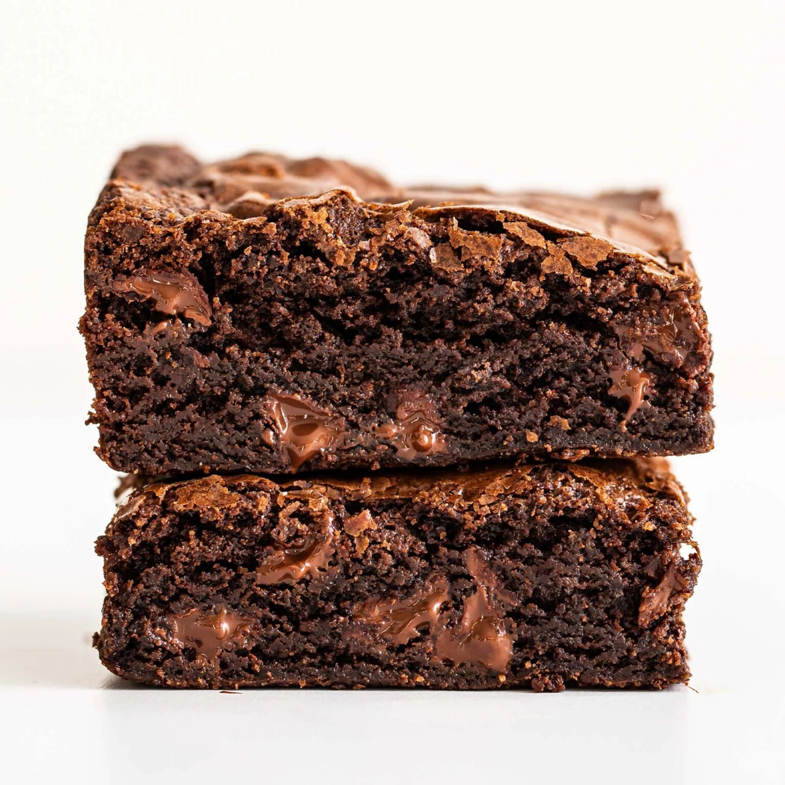

Chewy Brownies

Description
The BEST Chewy Brownies are just as chewy as the boxed brownies but packed with way more chocolate flavor. One bowl recipe made in less than 1 hour!
Ingredients
- 5 tablespoons (71 grams) unsalted butter
- 1 1/4 cups (249 grams) granulated sugar
- 2 large eggs plus 1 egg yolk, cold
- 1 teaspoon vanilla extract
- 1/3 cup vegetable oil
- 3/4 cup (75 grams) unsweetened cocoa powder
- 1/2 cup (63 grams) all-purpose flour
- 1/8 teaspoon baking soda
- 1 tablespoon cornstarch
- 1/4 teaspoon salt
- 3/4 cup (128 grams) semisweet chocolate chips
Steps
- Preheat the oven to 325°F
- Line a 8 by 8-inch pan with foil or parchment paper and spray with nonstick cooking spray.
- In a microwave safe bowl, add the butter and sugar. Microwave for about 1 minute, or until the butter is melted. Whisk in the eggs, egg yolk, and vanilla. Stir in the oil and cocoa powder.
- With a rubber spatula, stir in the flour, baking soda, cornstarch, and salt until combined. Stir in the chocolate chips.
- Spread the brownie batter evenly into the prepared pan. Place in the oven and bake for 30 minutes, or until the brownies are set and a cake tester inserted into the center has moist crumbs attached. Do not overcook. Let cool completely before cutting and serving.